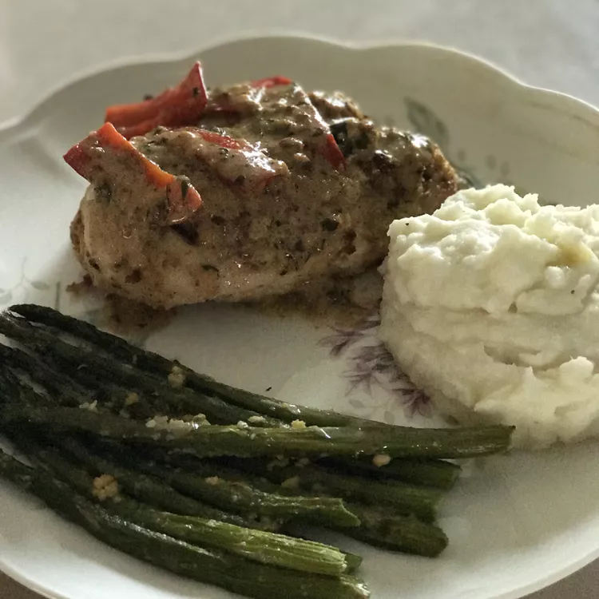

- 1/4 cup milk
- 1/4 cup bread crumbs
- 1 pound skinless,boneles chicken breast halves
- 3 tablespoons butter
- 1/2 cup chicken broth
- 1 cup heavy whipping cream
- 1(4 ounce) jar sliced pimento peppers, drained
- 1/2 cup grated Parmeasan cheese
- 1/4 cup chopped fresh basil
- 1/8 teaspoon ground black pepper